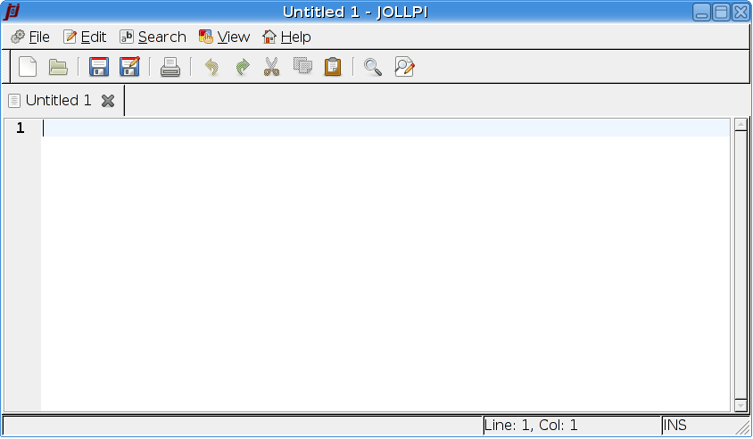

Jollpi Manual
Chapter 2. Getting Started
In this chapter there are two parts,
Starting Jollpi and
The Jollpi Window.
Starting Jollpi
You can start Jollpi by typing its name on the command line.
$jollpi
The Jollpi Window
When you start jollpi, the following window is displayed :

The jollpi window contains the following elements :
Menubar
The menus on the menubar contain all of the commands you
need to work with files in jollpi.
Toolbar
The toolbar contains a subset of the commands that you
can access from the menubar.
Display area
The display area contains the text of the file that you are editing.
Statusbar
The statusbar displays information about current jollpi activity and
contextual information about the menu items.
The statusbar also displays the following information:
- Cursor position: the line number and column number where the cursor is located.
- Edit mode: If the editor is in insert mode, the statusbar contains the text INS.
If the editor is in overwrite mode, the statusbar contains the text OVR.
Press the Insert key to change edit mode.
Like other applications, actions in jollpi can be performed in several ways :
with the menu, with the toolbar, or with shortcut keys. Shortcuts keys are listed in the
chapter Shortcuts.